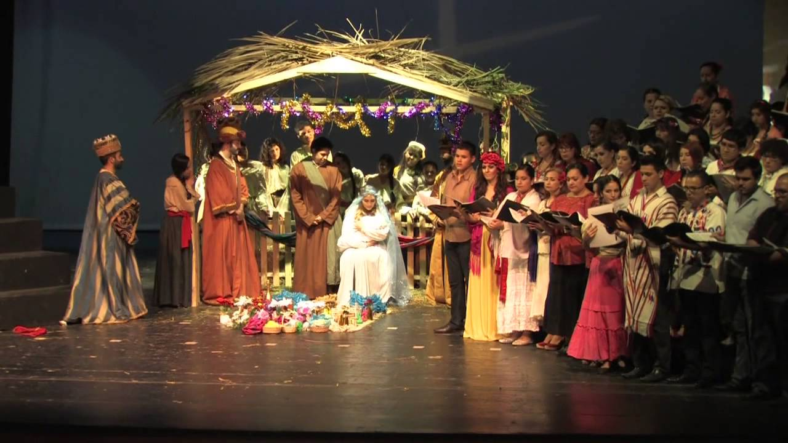

Posadas Navideñas
Las posadas son las fiestas típicas que se celebran 9 días antes de Navidad, del 16 al 24 de diciembre.
En México, una posada es una celebración que incluye ponche calientito, canastas de dulces, velas, luces de bengala y piñatas de siete picos.
Su origen es religioso y representa el camino recorrido por María y José a Belén en el que pedían asilo por una noche, la noche en la que nacería Jesús.
Las posadas llegaron a México con la conquista española y como podrás imaginar, buscaban suplantar las tradiciones de los aztecas, quienes celebraban durante
el mes del panquetzaliztili (diciembre), la llegada de su dios principal y de la guerra, Huitzilopochtil. Estas fiestas iniciaban el 6 de diciembre y duraban
20 días en los que se colocaban banderas en los árboles frutales y estandartes en el templo principal.
Cuando llegaron los españoles en la conquista, cambiaron la tradición azteca por festejos llamados “misas de aguinaldo”, en las que se leían pasajes
y representaciones alusivas a la Navidad.
En En estas celebraciones se daban pequeños regalos a los asistentes conocidos como “aguinaldos”, de ahí que esa prestación que se da por ley en México
en la que se recibe un “dinerito extra” se llame igual.
La forma de celebrar una posada navideña ha ido cambiando con el tiempo y se le han ido agregando elementos que dependen hasta de la región.
En general, antes de comer antojitos o buñuelos, los asistentes a la fiesta se dividen en dos grupos separados por una puerta, el primero representa
a María y José (los peregrinos) y el segundo a los posibles hospederos. Después se canta la letanía con velas y luces de bengala en la mano: “en el nombre
del cielo, os pido posada, pues no puede andar, mi esposa amada…”, hasta llegar al final en la que los hospederos cantan “entren Santos Peregrinos, Peregrinos,
reciban este rincón, que aunque es pobre la morada, la morada, os la doy de corazón…”.
Cuando termina el canto, empieza la convivencia en la que se puede comer y beber, para después “romper la piñata”, un elemento esencial en las posadas.
Aunque el origen de las piñatas es chino, los colonizadores las trajeron a México y simboliza el triunfo de la fe sobre el pecado. Los 7 picos representan
los 7 pecados capitales, los dulces adentro, la gracia de Dios, la venda en los ojos es la fe y las personal alrededor a la iglesia como guía para vencer el pecado,
por eso se canta “dale, dale, dale, no pierdas el tino, porque si lo pierdes, pierdes el camino |
 |